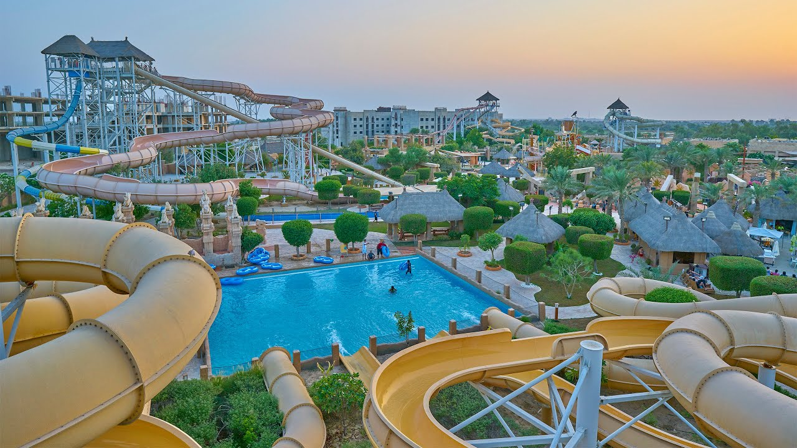
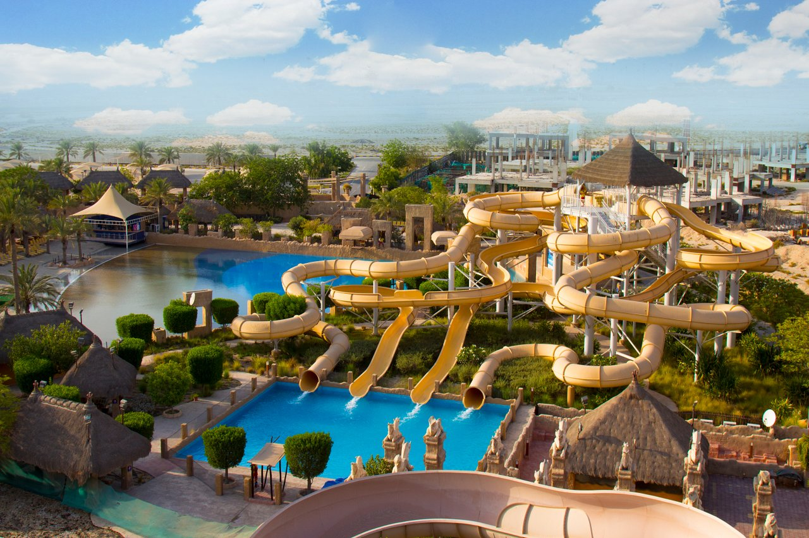
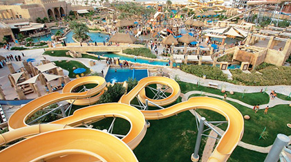
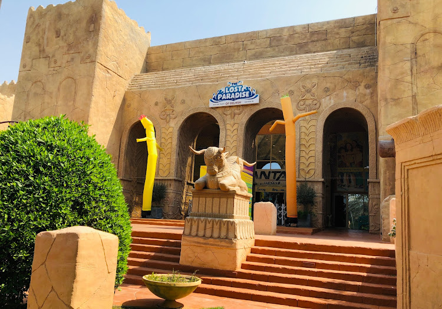

The Lost Paradise, Bahrain is a Dilmun Era- Themed Waterpark and the first ever outdoor waterpark in the Kingdom of Bahrain. It was built on the 2nd of September, 2007. Set as the biggest and currently covers an overall area of 77,000 sq. meters, the Lost Paradise of Dilmun has recaptured the ancient history of Bahrain by integrating it into the park’s theme.
 